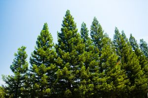

Overview / परिचय

Pine trees are evergreen trees mainly found in cold mountainous regions. They are famous for their needle-like leaves and cone-shaped fruits.
पाइन वृक्ष हे मुख्यतः थंड पर्वतीय प्रदेशात आढळणारे सदाहरित वृक्ष आहेत. हे सुईसारख्या पानांसाठी आणि शंकूसारख्या फळांसाठी प्रसिद्ध आहेत.